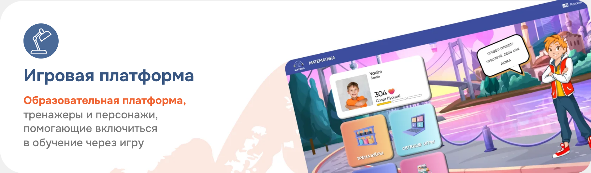
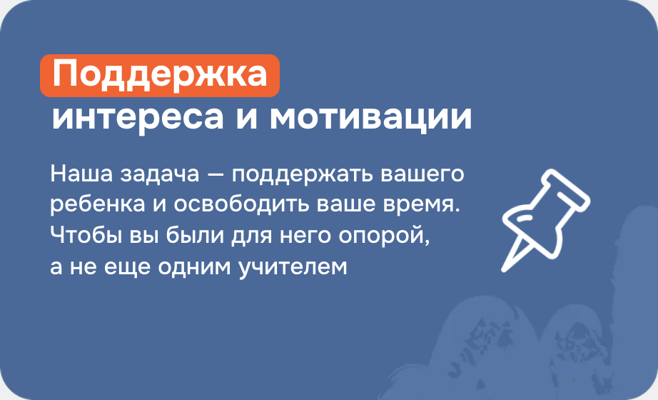
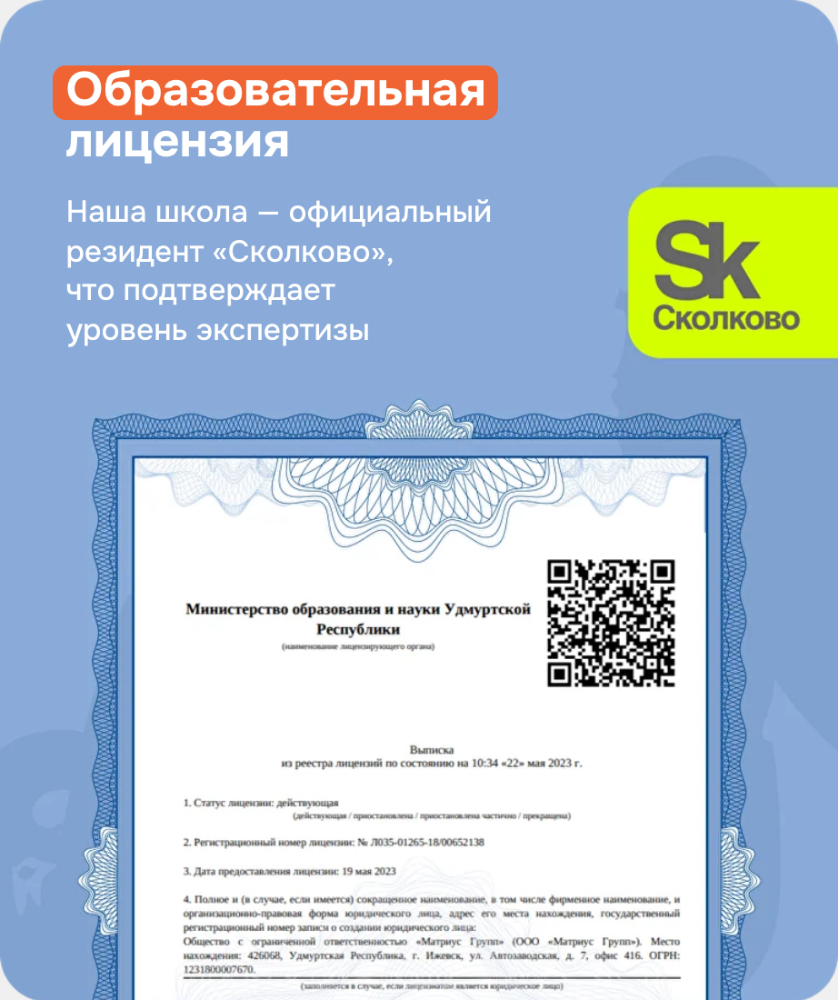
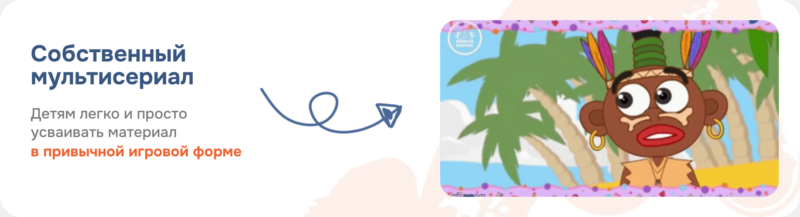
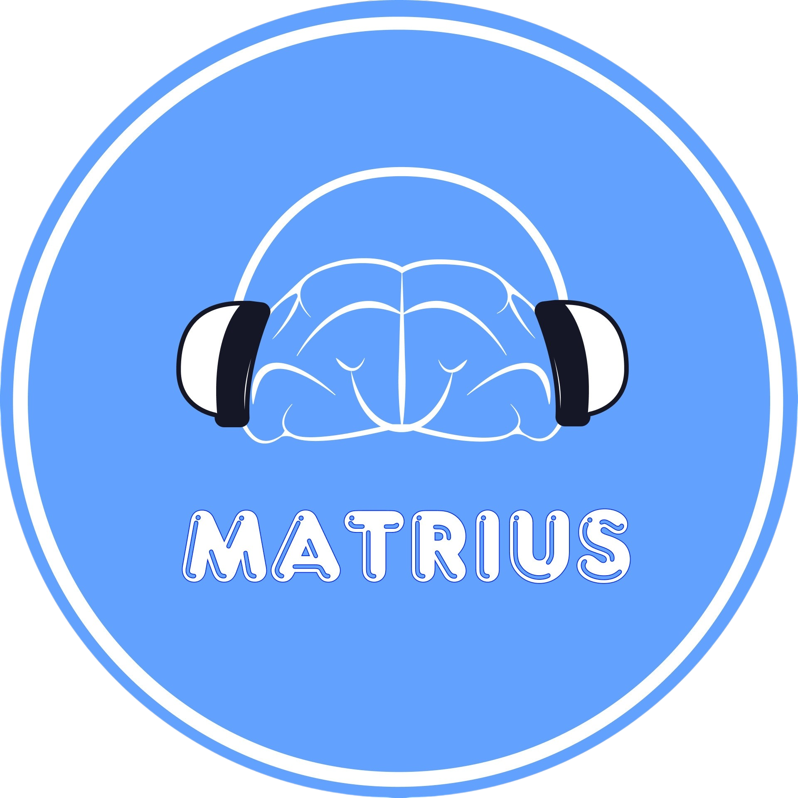

Почему родители выбирают Matrius







Всем родителям учеников 7–14 лет Matrius выдаёт доступ к закрытой базе знаний по скорочтению.




«60 минут занимаемся вами, а не продажей»
Заполните форму — мы предоставим доступ к материалам и согласуем удобное время диагностики.